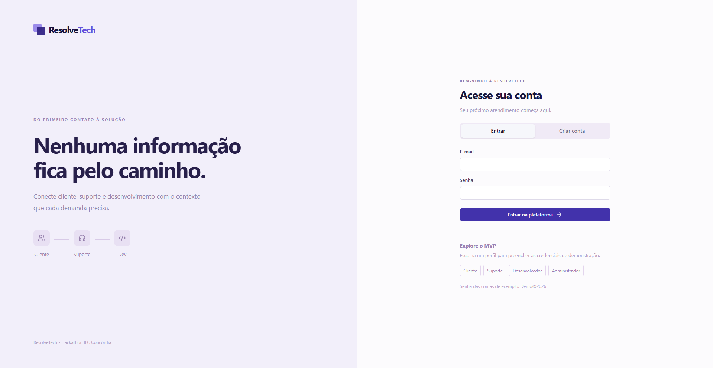
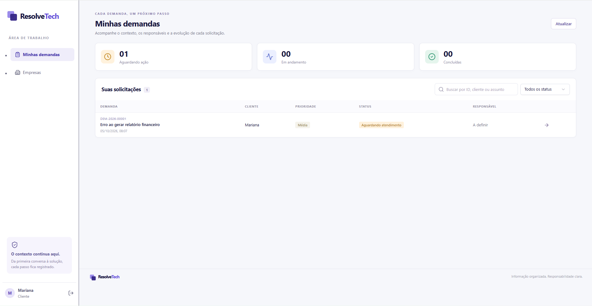

Falta de informação
O cliente abre o chamado sem contexto técnico e o time precisa voltar a perguntar.
Do primeiro contato à solução
Conecte cliente, suporte e desenvolvimento com o contexto que cada demanda precisa. A ResolveTech transforma o chamado em uma demanda técnica estruturada antes do escalonamento.

O cliente abre o chamado sem contexto técnico e o time precisa voltar a perguntar.
Horas gastas tentando entender o que realmente aconteceu.
Sem o problema bem definido, o retrabalho é quase certo.
Cada pessoa vê o que precisa. O contexto continua aqui, da primeira conversa à solução.

Perguntas certas para cada tipo de problema.
Conduz o cliente até reunir o contexto técnico.
Atendimento ao cliente pelo canal que ele preferir.
Tudo o que o desenvolvedor precisa, num só lugar.
Do primeiro contato à resolução, cada passo registrado.
Plataformas como Milldesk, Zendesk e Movidesk/Zenvia concentram o gerenciamento do atendimento. A ResolveTech transforma o chamado em demanda técnica estruturada antes do escalonamento.
Equipe do 2º Hackathon IFC Concórdia · Instituto Federal Catarinense
Deixe seu e-mail e a gente entra em contato para mostrar a ResolveTech funcionando.